Carboxylic acids also are major products of biochemistry occurring under oxidizing conditions and are thus widespread throughout living systems on Earth. You are probably familiar with the
bottle of wine that has turned to vinegar, the result of enzymatic oxidation of ethanol to acetic acid. Carboxylic acids are characterized by the presence of the carboxy group, a functional group containing
a hydroxy unit attached to a carbonyl carbon. This substituent is written COOH or CO2H; both representations are used in this chapter. Carboxylic acids not only are widely distributed in nature, they are also important industrial chemicals. For example, besides being the most important building block in the assembly of complex biological molecules, acetic acid is an industrial commodity that is
produced in very large quantities.
Much of the functional behavior of carboxylic acids can be anticipated if we view them structurally as hydroxy carbonyl derivatives. Thus, the hydroxy hydrogen is acidic, the oxygens are basic and nucleophilic, and the carbonyl carbon is subject to nucleophilic attack.
Nomenclature - IUPAC System
The IUPAC name of a carboxylic acid is derived from that of the longest carbon chain that contains the carboxyl group by dropping the final -e from the name of the parent alkane and adding the suffix -oic followed by the word acid (Section 2.3C). The chain is numbered beginning with the carbon of the carboxyl group. Because the carboxyl carbon is understood to be carbon 1, there is no need to give it a number. The IUPAC system retains the common names formic acid and acetic acid, which are always used to refer to these acids.
| HCOOH Methanoic acid (Formic acid) | CH3COOH Ethanoic acid (Acetic acid) | 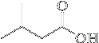 3-Methylbutanoic acid (Isovaleric acid) |
If the carboxylic acid contains a carbon-carbon double or triple bond, change the infix from -an- to -en- or -yn-, as the case may be, to indicate the presence of the multiple bond and show the location of the multiple bond by a number.
| 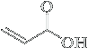 Propenoic acid (Acrylic acid) | 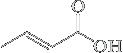 trans-2-Butenoic acid (Crotonic acid) | 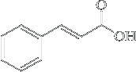 trans-3-Phenylpropenoic acid (Cinnamic acid) |
Naming the Carboxylic Acids and polyfunctional Compounds groups
In the IUPAC system, a carboxyl group takes precedence over most other f unctional groups (Table 16.1), including hydroxyl groups, amino groups, and the carbonyl groups of aldehydes and ketones. As illustrated in the following examples, an −OH group is indicated by the prefix hydroxy-; an −NH2 group, by amino-; and the C=O group of an aldehyde or ketone, by oxo-
| 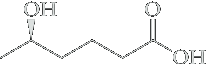 (R)-5-Hydroxyhexanoic acid | 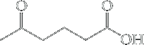 5-Oxohexanoic acid |
 4-Aminobutanoic_acid.png |
|  | |
| 5-Oxohexanal | |
| 5-Oxo (Substituent) | al (Suffix) |
The overall “order of precedence” of the most common functional groups is given below. In any molecule containing more than one functional group, the group highest in precedence is entered as a suffix in the name, and all other substituents as prefixes.
As another example consider a molecule containing alcohol, ketone, and aldehyde functions.
In its name, the first two groups appear as prefixes (hydroxy- and oxo-, respectively), while the aldehyde group, being of highest precedence, is signified by the suffix -al: This compound is 5-Hydroxy-4-oxopentanal.
Alkenes and alkynes are exceptions. They rank below the amines in order of precedence, but when a carbon – carbon double or triple bond is part of the parent chain or ring of a molecule, we insert -en(e)- or -yn(e)- just before the suffix for the highest-ranking functional group. The following examples of names for carboxylic acids illustrate these principles.
 Carboxylic acid | > |  Acid Anhydride | > |  Ester | > | Acyl halide | > |  Amide | > | RCN Nitrile | > | 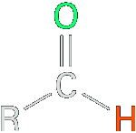 Aldehyde | > | 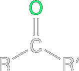 Ketone | > | ROH Alcohol | > | RSH | >RNH2 | > | R−O−R' ether |
| ⟵ Increasing precedence in naming | |||||||||||||||||||||
The IUPAC system derives the names of the carboxylic acids by replacing the ending -e in the name of the alkane by -oic acid. The alkanoic acid stem is numbered by assigning the number 1 to the carboxy carbon and labeling any substituents along the longest chain incorporating the CO2H group accordingly.
|  (R)-2-Bromopropanoic acid (α-Bromopropionic acid) | CH2=CHCOOH Propenoic acid (Acrylic acid) | -Dimethylpentanoic_acid.png) (2R,3S)-Dimethylpentanoic acid |
In multiply functionalized carboxylic acids, the main chain is chosen to include other functional groups as much as possible (the functional group that did not receive the priority). For example
Saturated cyclic acids are named as cycloalkane-carboxylic acids. Their aromatic counterparts are the benzoic acids. In these compounds, the carbon attached to the carboxy functional group is C1.
| Functional group | Name as suffix | Name as substituent |
|---|---|---|
| Carboxylic acids | -oic acid | carboxy |
| Esters | -oate | alkoxycarbonyl |
| Acid halides | -oyl halide | halocarbonyl |
| Amides | -amide | carbamoyl |
| Nitriles | -nitrile | cyano |
| Aldehydes | -al | oxo |
| Ketones | -one | oxo |
| Alcohols | -ol | hydroxy |
| Amines | -amine | amino |
| Ethers | ether | alkoxy |
When assigning locants, the functional group in the suffix should be assigned the lowest possible number, for example:

(diacetone alcohol)
Dicarboxylic acids
Dicarboxylic acids are named by adding the suffix -dioic acid to the name of the carbon chain that contains both carboxyl groups. The numbers of the carboxyl carbons are not indicated because they can be only at the ends of the parent chain. Following are IUPAC and common names for several important aliphatic dicarboxylic acids.
| 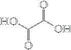 Ethanedioic acid (Oxalic acid) | 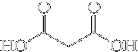Propanedioic acid (Malonic acid) |  Butanedioic acid (Succinic acid) | 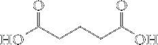 Pentanedioic acid (Glutaric acid) |  Hexanedioic acid (Adipic acid) |
The name oxalic acid is derived from one of its sources in the biological world, namely plants of the genus Oxalis, one of which is rhubarb. Adipic acid is one of the two monomers required for the synthesis of the polymer nylon 66. A mnemonic phrase for remembering the common names for the dicarboxylic acids oxalic through adipic is Oh my, such good apples.
A carboxylic acid containing a carboxyl group bonded to a cycloalkane ring is named by giving the name of the ring and adding the suffix -carboxylic acid. The atoms of the ring are numbered beginning with the carbon bearing the −COOH group.
| 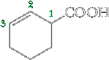 2-Cyclohexenecarboxylic acid | trans-1,3-Cyclopentanedicarboxylic acid" |